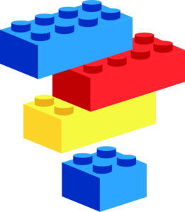

A Rust Adventure
"Rust" and "Cargo" are registered trademarks of the Mozilla Foundation. Rust logo by the Mozilla Foundation is licensed under CC BY 4.0.What is Rust?
Rust is a systems programming language that runs blazingly fast, prevents nearly all segfaults, and guarantees thread safety.-- Rust homepage
- General programs
- Low level programming
- High performance and concurrency
Why Rust? What's wrong with language X?
- Cross-platform and complete standard API
- Simpler and more practical object model
- Native performance and minimal memory usage
- Complete memory safety
- Simple, lock-free concurrency
A little about Rust
- Rust began as a pet project by Mozilla employee Graydon Hoare
- Was born out of frustration over C/C++
- Mozilla took interest and began sponsoring the project in 2009
- The very first public version was released in 2012
- Rust 1.0 was released spring 2015
Ownership and borrowing
- Key concept in Rust is ownership of values
- Only one owner at a time
- Values can change owners
- Variables are said to "own" their values
- Other variables and functions can borrow a value from the owner
- Keep this in mind, but we'll talk about borrowing next week
Getting a taste
Open up the Rust playground (https://play.rust-lang.org) so we can try out some code.
Basic syntax
Very familiar to C++ and Java developers:
// Comments are written with two slashes.
/* Comments can also
span multiple lines. */
fn main() { // Program starts in a `main()` function.
// Variables can be assigned with `=`.
let x = 4;
// We can use all of the normal math operators.
let y = (x / 2 + 20) * 4 % 46;
// We can create booleans, strings, and floating point numbers.
let awesome = true;
let name = "Kuvira";
// We use `let` for all types. Rust can usually figure out what
// type it's supposed to be. If it can't, we have to tell it:
let byte: u8 = 255;
// Function calls use `()`. Namespaces are similar to C++.
let square = num::pow(y, 2);
}Available scalar data types:
- Booleans:
bool, eithertrueorfalse - Signed integers:
i8,i16,i32,i64andisize(pointer size) - Unsigned integers:
u8,u16,u32,u64andusize(pointer size) - Floating point numbers:
f32,f64 - Unicode character:
char
Arrays and slices
// Arrays are fixed, like in C++ or Java.
// Their size is always known at compile time and is part of their type.
let numbers = [0, 1, 1, 2, 3, 5, 8, 13];
println!("array size: {}", numbers.len());
// Slices let you borrow just a portion of an array.
let slice = &numbers[1 .. 4];
println!("{:?}", slice);Vectors
Arrays aren't always useful by themselves. We can use vectors to make a list of values that can change in size.
// Create a vector that stores floats.
let mut prices = Vec<f32>::new();
// Add some values to the vector.
prices.push(10.99);
prices.push(39.98);
println!("{:?}", prices);Strings and string slices
// Rust has two types of strings.
// This is a String object. It is a modifiable vector of chars.
let mut string = String::new();
string.push_str("hello");
// This is a &str. It is a static slice of a String. It gives a view of a string.
let slice = "dog";Tuples
// Unlike vectors, tuples can store a mix of types, but
// they also have a fixed length.
let my_tuple = (42, "foo", 3.141);
println!("{:?}", my_tuple);
// We can access the positions as properties.
println!("PI is close to {}.", my_tuple.2);
// Tuples can also store other tuples.
let inception = ("square1", (0, 1), (3, 2));
println!("{}", (inception.1).0);
// Tuples can also be empty. An empty tuple is called the "unit type", and is often
// used to represent the concept of "nothing" (not directly related to null).
let empty = ();
An excursion on mutability
Notice let and let mut?
- Values are immutable by default
- Variables can be made mutable with
mut:// This variable is mutable. let mut mutable = 16; mutable += 12; // This variable is immutable. let immutable = 96; immutable = immutable / 2; // <- Error! - Mutability extends throughout entire objects
- Value objects and safety
Control structures
Rust does away with a lot of the extra boilerplate in control structures that other languages tend to have.
let mut n = 5;
if n < 0 {
println!("{} is negative", n);
} else if n > 0 {
println!("{} is positive", n);
} else {
println!("{} is zero", n);
}
while n < 21 {
if n % 5 == 0 {
println!("{} is divisible by 5.", n);
}
n += 1;
}For loops and iterators
for in loops are designed explicitly for looping over iterators (more on them later). We can create an iterator with range notation: a..b.
for n in 1..101 {
if n % 15 == 0 {
println!("fizzbuzz");
} else if n % 3 == 0 {
println!("fizz");
} else if n % 5 == 0 {
println!("buzz");
} else {
println!("{}", n);
}
}Functions
- Encapsulate a set of code
- Take a list of arguments and optionally return a value
- Functions do not have to be part of a class
// Create a simple function that returns the absolute value of a number.
// We must specify the types of the parameters and the type returned.
fn absolute_value(number: i32) -> i32 {
if number < 0 {
// We can explicitly return a value any time with `return`...
return 0 - number;
}
// ... or let the return value be the last expression.
number
}Next session:
- Installing the Rust compiler and compiling code
- Object-like programming with structs and traits
- More on borrowing and references
Come back next week when the real fun begins!
Essential Rust
What we will be doing today:
- Installing
rustc - Learning about structures and traits
- Understanding borrowing and references
Your friendly neighborhood rustc
- The standard Rust compiler
- Itself written in Rust
- Very helpful error messages and suggestions, and serves as a debug tool
Installing Rust
- Go to http://www.rust-lang.org/downloads.html and download the package for your platform.
Or on Linux or Mac:
$ curl -sSf https://static.rust-lang.org/rustup.sh | sh - Open a command window and type
rustc -V
Hello, world!
Put the following program into hello.rs:
fn main() {
println!("Hello, world!");
}Compile it with:
$ rustc hello.rsStructures
- Pretty much just objects
- Fields can be public or private (private by default)
Structures example:
// Intriguing structs, no?
struct Point {
pub x: i32,
pub y: i32
}
struct Square {
top_left: Point,
bottom_right: Point
}
// Creating an instance of a struct (on the stack, BTW)
let my_square = Square{
top_left: Point{x: 1, y: 1},
bottom_right: Point{x: 3, y: 4}
};But, but, but what about getters and setters?
Remember mutability and immutability? If the struct should not be modified, make it immutable. Getters and setters make sense sometimes, but they are rare in Rust code.
Note: Modules and visibility
- At a higher level than structures, modules organize related code
- Similar to namespacing
- Module names are simply based on files and folders
- Method and field visibility applies to the current module, rather than the struct
Enums
- A powerful, flexible addition to the type system
- Enums implement "algebraic" typing and allow you to specify variants
- Allow you to group and categorize possible sub-types
Wait, what?
Let's try an example. Here's how we could implement a singly-linked list using enums:
// This declares a first-class type 'List'
enum List<T> {
// A list can be either one of two variants: a node with a value...
Node {
value: T,
next: List<T> // A node has a 'next' property holding another list node
},
// ... or a tail.
Tail
// The tail of the list has no value or next node.
}You may have noticed generics...
Yeah, Rust has 'em. They're pretty much the same as in C++, C#, or Java.
So, yeah, moving on...
Traits are like using LEGO® bricks for objects and types.
Programming to an interface with traits
- Traits are the "glue" that hold everything together and make Rust's type system work
- While structs only define properties, traits only define methods
- Function similarly to a mix of interfaces and abstract classes
- You can implement as many traits as it likes
- Traits can provide default implementations for methods and inherit other traits
SUPERFASTTRAITEXAMPLE!!
struct Circle {
x: f64,
y: f64,
radius: f64
}
// This is a trait for something that has area
trait HasArea {
// Oh look, a reference to `self`, the current object (a.k.a. `this`)
fn area(&self) -> f64;
}
// Now let's define how circles compute their area
impl HasArea for Circle {
fn area(&self) -> f64 {
std::f64::consts::PI * (self.radius * self.radius)
}
}You did want inheritance, right?
trait Animal {
pub fn speak();
}
trait Pet: Animal { // Pet trait extends Animal
pub fn pet();
}
struct Lion {}
impl Animal for Lion { // Lion must implement speak()
pub fn speak() {
println!("Roar!");
}
}
struct Cat {}
impl Pet for Cat { // Cat must implement speak() *and* pet()
pub fn speak() {
println!("Mew!");
}
pub fn pet() {
println!("Prrr...");
}
}
Instead of pointers and references, Rust uses borrowing to share values across code.
Sharing is caring
fn point_opposite(point: &Point) -> Point {
Point(0 - point.0, 0 - point.1)
}
let p = Point(9, 7);
let opposite = point_opposite(&p);
println!("({}, {})", opposite.0, opposite.1);This plays into "ownership" like we discussed before quite a bit.
Passing values around transfers ownership, while borrowing just lends the value to someone else for a bit.
Next session:
- Heap allocation and managing objects by reference
- Rust patterns and concepts
- Error handling
Come back next week for the last installment!
A simple, complete Rust program
What we will be doing today:
- Heap allocation and managing objects by reference
- Getting a feel of Rust code
- Exploring common Rust patterns
- Exploring error handling
- Using Cargo for dependencies
Option<T>: A world without null
- Rust does not have
null! - Objects are guaranteed to exist
Garbage collection
- High level languages: C#, Java, Python, Ruby, JavaScript, PHP, Go
- Programmer creates objects
- Runtime deals with freeing objects
- Refcounting and GC cycles
- No predictability
- Performance overhead
Destructuring with Drop
struct Foo;
impl Drop for Foo {
fn drop(&mut self) {
println!("Dropping a Foo!");
}
}Heap allocation with Box
fn main() {
let cat = Box::new(Cat);
}Cargo: easy libraries
Cargo is the easy way to handle libraries.
All the avaiable libraries are at http://crates.io.
Thanks for coming!
This presentation is available online at stephencoakley.com/presentations/rust-workshop.